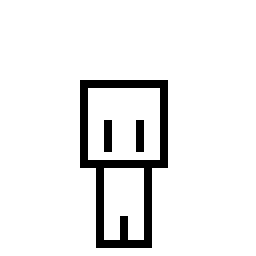
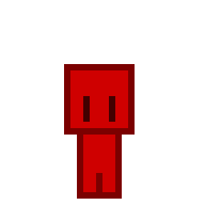
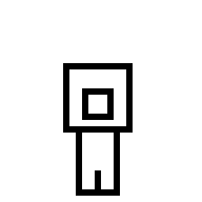
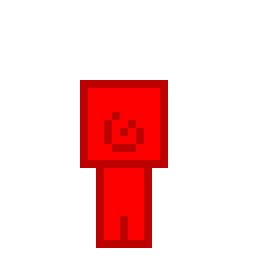
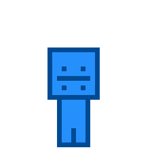

Sobre o jogo
Switch Block é um jogo que consiste em:
- Apertar botões
- Sobreviver a flechas
- Fazer pontos
Esse jogo foi feito para uma game jam então a primeira versão tem pouco conteudo:
Controles
Botão azul, vermelho e branco(de acordo com a cor que você apertar o personagem muda de cor):
Skins
O jogo possui duas skins diferentes.
-Skin Normal


-Skin Reversed


